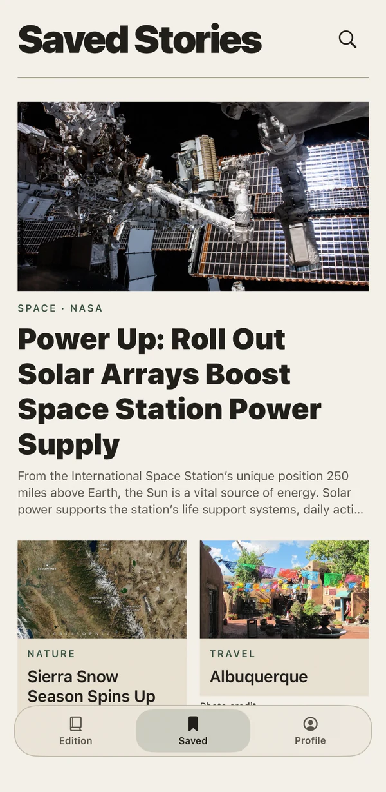
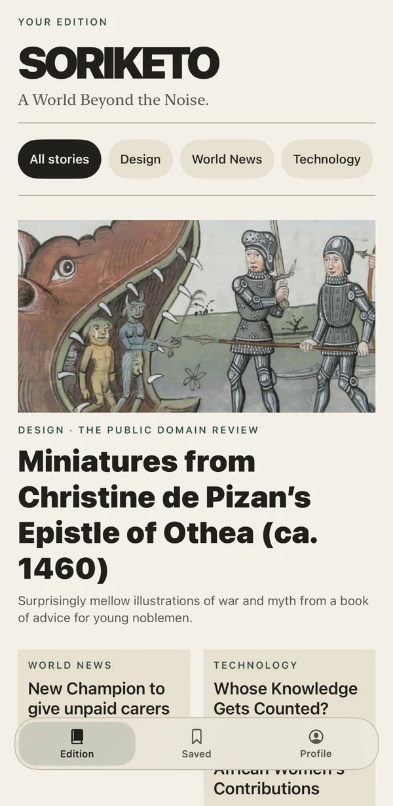

From the Digital Garage
Free for life.
Ad-free for life.
A personal magazine for the wonderfully curious. Discover stories that surprise you and save the ones that stay with you.
Explore Soriketo


Actual Soriketo app screens
Inside Soriketo
A world beyond
the noise.
Follow the topics and sources you’re curious about. Soriketo turns them into a magazine that’s yours to explore.

The Soriketo promise
Every feature.
Free for life.
No ads, subscriptions or paid upgrades. If you’d like to support development, the in-app Tip Jar offers optional, one-time tips. Everyone gets the same Soriketo.
Privacy
Your reading
stays yours.
Soriketo needs no account. Your reader profile, preferences, saved stories, reading history and achievements are stored on your device.
Read the Privacy Policy
Reading and storage
Soriketo stores reading data and cached content locally. The app has no advertising or advertising trackers. Optional summaries use Apple Intelligence on supported devices. Reading reminders are scheduled on your device.
Publishers and content
Soriketo connects directly to publishers and content hosts to fetch feeds, stories and images. Those services can receive standard request information, such as your IP address. When you open a publisher’s website, its own privacy policy applies.
Backups, tips and support
If you export or schedule a backup, Soriketo writes the file to the Files location you choose. Your selected storage provider may sync it. Apple processes optional tips through the App Store. If you email for support, Ravzzy receives the information you share in the message.
Managing your data
You can clear reading history in Profile, reset Edition’s read status in Settings, remove saved stories and manage exported backups in Files.
Help & Support
Soriketo FAQ.
Set up your Edition, find feeds you want to follow, and manage your reading and backups.
Reading & Edition
Is Soriketo free? What is the Tip Jar?
Soriketo is free and ad-free for life. Optional one-time tips through the App Store support development. Every feature is available without a tip, and tips never renew automatically. Publisher websites may display their own ads or subscription prompts.
How do I refresh Edition or find more stories?
Pull down from the top of Edition or a topic and release to check your sources. New unread stories go first. If there are no new entries, Soriketo can surface other unread stories from the cache. Swipe up at the bottom to load more.
Why does the first Edition take longer?
On first use, Soriketo prepares stories and images from the topics you chose. If a matching Edition was prepared by a successful background or manual refresh in the last 12 hours, the app can reuse it on launch without starting another automatic refresh. iOS decides when background refresh runs, so you can always pull down to check for more.
Where did a story go after I opened it?
Edition and its topic views show unread stories. Opened stories can be found in Profile under Reading History. Save a story with the bookmark icon to keep it in Saved, where you can pull down to reveal search.
Can I read offline or copy a passage?
Previously prepared articles can be read offline while their content is cached on your device. New stories and publisher websites need a connection. In the native reader, tap the copy icon and choose Select Text for a passage or Copy Entire Article for the full text.
Topics & Sources
How do I follow topics and manage built-in sources?
Open Profile → Settings → Subscribed Topics to follow or unfollow topics. Open Sources to turn individual publishers on or off. The pencil beside a built-in source lets you rename it, change its topic, or use a replacement feed.
How do I add my own source?
- Open Profile → Settings → Sources → Add Custom Source.
- Paste a public HTTPS RSS or Atom feed URL. You can give the source your own name.
- Assign it to a topic you follow, or choose Create Topic. Tap Save to check the feed. If you pick an existing topic you don’t follow, turn it on under Subscribed Topics.
Use the switch beside a custom source to pause it, or the three-dot menu to edit or delete it.
How do I find a publisher’s feed URL?
- Look on the publisher’s website for RSS, Atom, Feeds, or the RSS icon. The footer and Help pages are good places to start.
- If you can’t find it, search for the publisher or blog name followed by RSS feed. Some publishers offer separate feeds for each section.
- Copy the link to the feed itself. It may show raw XML or open a feed preview in your browser. You can see examples on NASA’s RSS feeds page and The Guardian’s feed help page.
Some websites don’t publish a public feed. Soriketo needs an RSS or Atom feed URL to add them as custom sources.
Why is a source missing or showing no articles?
Check that the feed URL is public, uses HTTPS, and opens without signing in. Make sure the source is enabled and its topic is followed. If the feed only publishes summaries or provides links to stories Soriketo can’t prepare in its reader, turn off In-App Reading Only to include eligible publisher stories. Pull to refresh after checking.
Reading Settings
What does In-App Reading Only do?
When it’s on, Edition includes stories Soriketo can present in its native reader. Turn it off to also include eligible articles that open in the publisher’s web view. Publisher subscriptions and paywalls still apply on the publisher’s site.
How do I change the appearance?
Go to Profile → Settings → Appearance and choose System, Light, or Dark. System follows your device’s appearance setting.
How do I use Apple Intelligence summaries?
Turn on Apple Intelligence in Soriketo Settings, then tap the sparkle icon in a native article. The button appears when Apple Intelligence is available on the device. Check the device’s Apple Intelligence settings if it’s missing.
How do Reading Reminders work?
Reading Reminder is on by default, with delivery subject to iOS notification permission. Choose a time in Settings. Soriketo sends one reminder at the next occurrence of that time after at least 72 hours away. Opening the app resets the wait. Tap the reminder to open Edition, or use Send Test Notification to check delivery in about five seconds. You can turn reminders off at any time.
How do I change my profile name or photo?
Tap the pencil on your reading room in Profile. Update your name or choose a photo and save your changes. This profile is stored on your device.
What counts toward streaks and achievements?
With Track Reading Streak on, opening Soriketo on consecutive days builds your streak. Achievements also recognize distinct articles opened, saved, or shared. See your progress in Profile → View All Achievements.
Backups & Data
How do I back up or move my reading data?
Open Profile → Settings → Backup & Restore → Export a New Backup and choose a location in Files. On another device, use Restore from File and confirm that you want to replace its current profile data. The JSON backup includes saved stories, reading history, read status, achievements, and settings. Backup folder access is device-specific, so choose a folder again when needed.
How do I schedule backups or choose a folder?
Open Backup & Restore → Scheduled Backups, then use Choose a Folder in Files or Change Folder in Files. Select a writable location and choose Daily, Weekly, or Every 30 days. Back Up Now writes on demand. iOS can defer scheduled backups. Soriketo also checks for overdue backups when you open it.
Will each scheduled backup create a new file?
Turn on Overwrite Previous Backup to update one file named Soriketo-backup-latest.json. Leave it off to keep dated copies. These files contain readable JSON and may include private reading data, so choose where you store or share them.
What’s the difference between Clear Cache and Clear Reading History?
Clear Cache resets the read status used by Edition, so previously opened stories can appear again. Clear Reading History removes the list of recent reads from Profile and keeps the read status Edition uses. Saved stories and achievement progress are kept in both cases.
What happens if I choose Restore to Default?
Soriketo removes custom topics and sources, resets settings, turns off scheduled backups, and asks you to choose topics again. Your profile, saved stories, reading history, and achievements are kept. Use Open Backup & Restore in the confirmation to export a backup before you reset.
Still Need Help?
Include your app version and iOS or iPadOS version, plus the steps that led to the issue. For a feed problem, include its public RSS or Atom URL.